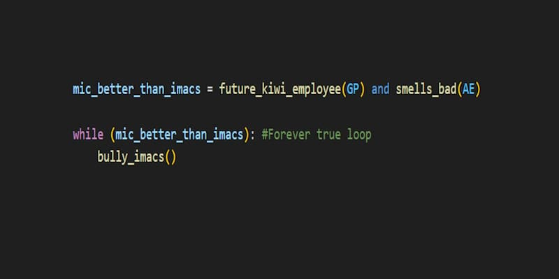

Modélisation, Informatique et Communication
2MIC
MIC er en av førspesialiseringene (pré-orientation, forkortet PO) hos INSA Toulouse, som kan velges i andreklasse. Linjen bygger mye på matte og informatikk, og muligheten til å spesialisere seg videre innen enten matte (MA) eller informatikk (IR).
I andreklasse har man svært liknende fag som PO'en IMACS. Mye matte, videreføring i informatikk og en god del elektronikk & automasjon. Forskjellen mellom IMACS og MIC i 2. klasse er at MIC slipper unna med nanoteknologi og elektromagnetikk, men tar igjen med dypere innføring i algoritmer og matematisk analyse.
Fagene i 2MIC
Første semester
- Analyse (teoretisk matte)
- Algèbre linéaire (teoretisk matte)
- Électronique analogique & numérique (elektronikk)
- Automation Continue & Discrète (automasjon)
- Algorithmique et Programmation (algoritmer)
- Python
- Logique Combinatoire (logikk)
- Unix (Linux)
Andre semester
- Analyse
- Probabilité (sannsynlighet)
- C (programmeringsspråk)
- Architecture Matérielle (systemarkitektur)
- Signal 1 (signalbehandling)
- Algorithmique et Programmation 2
Samt CSH (samfunnsfaglige) fag
- FLE (Franskkurs)
- APS (gym)
- PPI (karriereveiledning)
Det kreves gode kunnskaper i matte og informatikk, men det viktigste er bare å jobbe jevnt og ikke falle bak. MIC blir mye "lettere" i løpet av tredje året, ved at man får spesialisert seg mer.
3MIC
I tredjeklasse begynner ting å bli mer spesialisert, med mer fokus på informatikken, og valg av spesialisering.
Som videre spesialisering har man valg mellom IR (Informatique et Réseaux) og MA (Mathématiques Appliquées).
Fagene i 3MIC
Første semester
- Optimalisering
- Markovkjeder
- Analyse de données (dataanalyse)
- Système d'exploitation (operativsystemer)
- Algorithmique avancée
- Bases de données (databaser)
- Programmation Web (web-programmering)
- Réseaux (nettverk)
- Théorie de l'informatique et du codage (informatikkteori)